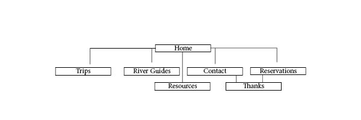
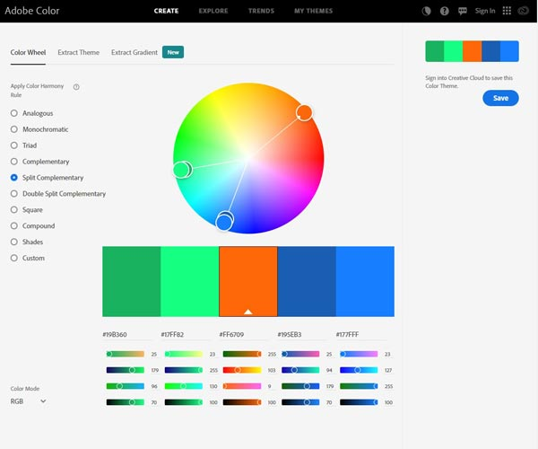
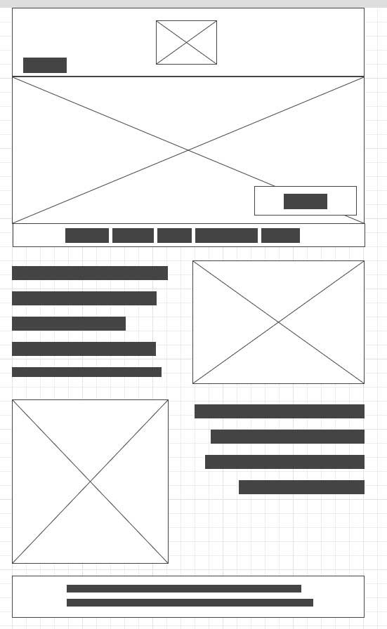

Purpose
The purpose of this site is to encourage families and youth groups to participate in a unifying river trip. The adventure will strengthen bonds as trials are conquered together. River trips are exhilaration and safety is the highest priority. With nature as the host, confidence and humility, cooperation and independence, and gratitude and service deepen.
Target
Target Audience is parents and grandparents of youth. Often, teenagers choose to distance themselves from family as they are becoming more independent. This can be a concern for adults who constantly try to include them. Whether a parent, grandparent, or adult leader of teenagers, anything that can encourage positive and safe interactions is a welcome distractions from technology and its addictive draw.
Michael
Position: Former Scoutmaster and Stake Young Men's President, Current Stake Seminary Teacher
Family: Father of 4
Need: Seeking an exciting activity to engage his teenage sons. He would like to help them reconnect with family and each other.
Strengthening ties of trust will encourage communication which will increase family participation. Youth need to recognize
the beauty and power of family connections to desire furthering the pattern in their own lives.
Linda
Position:
Family: Mother of 10, Grandmother of 20
Need: As grandchildren are spread across the world, the desire for a family reunion is intensified. She is looking for an experience
that will create lasting memories and build confidence. Working as a team can create ties that will continue to develop afterwards as well.
She needs an activity that is safe and for a large range of ages. It must also be affordable to cover such a large group.
Map
Home page will include engaging images of the river/activites, call to action, navigation, and contact information.
It will also display current local weather for Riggins, ID.
Trips page will include 3 separate activities described by length, skill level, cost and services provided.
River Guides page will include a minimum of three employee profiles. Name, picture, certification level, years of experience, email, and biography will be included.
Contact page will include essential contact information including a google map with address. There will also be a form.
Reservation page will include a table summarizing the 3 adventures with length, skill level, and cost information with a registration form
requesting customer's full name, email, phone, adventure selection, start date selection, and a question/comment text area.
Colors
Typography
Headings are in the font Covered By Your Grace.
Body text is in the font Oxygen.
Wireframe
Large
Medium
Small